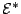

Graduate Student Seminar, 4:45pm September 29, 2003
Speaker:
Rebecca Weber
Title:
What I did on my Summer Vacation
Abstract:
My thesis problem is to show that two logical structures are
isomorphic, one a long-studied structure () and one a
very new structure (the fabled
). My talk will
introduce the two structures and discuss why the question of their
isomorphism is interesting. No logic background will be assumed.
To volunteer to give a talk, or for any other questions regarding this schedule, contact Wesley Calvert